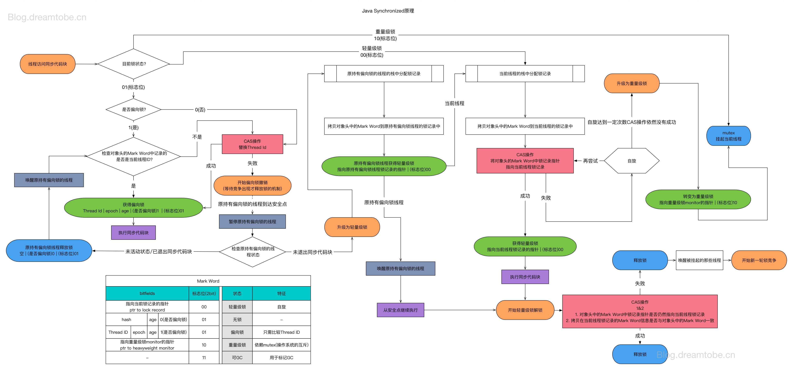

并发和并行概念
并行相互平行不关联，并发是对同一个资源交替操作
并发
多线程调用下边代码，对a的递增，结果是不可预料的。
1 | int a = 1; |
产生条件：
- 资源共享
- 资源可修改
- 多线程
并发为什么麻烦？并发需要考虑到哪些方面：
- 竞态条件：
- 非原子操作
- 指令重排：比如int a;int b; 在线程A中先后对ab赋值，在线程B中对b判断是否改变，不能确定a已经改变。
- 可见性：通过volatile，可以使变量更新可见，且对64位值的赋值变为原子操作
- 死锁，活锁，饥饿：死锁通常是锁定对象的调用顺序不对造成的，需要改变锁定对象的顺序
从另外的角度来考虑：
需要考虑线程的安全性（结果正确）的同时，考虑性能同时保证活跃性（比如非公平锁）
锁
- Synchronized

- CAS 非阻塞同步
CAS比较交换的过程可以通俗的理解为CAS(V,O,N)，包含三个值分别为：V 内存地址存放的实际值；O 预期的值（旧值）；N 更新的新值。
CAS非阻塞同步存在的问题：1. ABA问题 2. 自旋过长 3. 多个变量就失效
volatile详解：https://www.cnblogs.com/dolphin0520/p/3920373.html
自旋锁，重入，公平和改进的公平锁等实现：https://segmentfault.com/a/1190000015795906
美团，锁事：https://tech.meituan.com/2018/11/15/java-lock.html